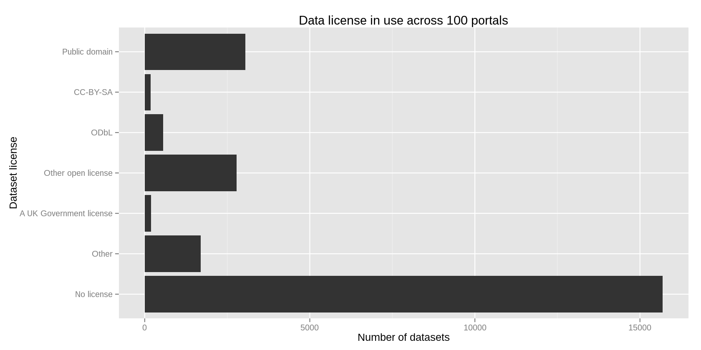

Open data licensing
I downloaded all of the metadata files from 102 open data portals hosted on CKAN, Socrata and OpenDataSoft. Each of these data portal softwares has a metadata field for the license of each particular dataset. In the present article, I look at this metadata field.
tl;dr: It turns out that most of the datasets don’t have licenses. Or if they do, it’s not specified in this field. I think it would be nice if they did.
The portals
I looked at these portals, but I ignored the following three because they aren’t associated with specific governments.
- datahub.io
- datastore.opendatasoft.com
- opendata.socrata.com
Reducing license names
I made a rough mapping between the free-form names of the licenses and some standard licenses. For example, CC0 and other public domain licenses got grouped into “Public Domain”.
I didn’t test this very well, so there are probably some errors, but I think these results are still informative.
Do people specify a license at all?
In doing this, I distinguished between whether a license was specified. Here’s a histogram of the proportion of datasets with licenses, by portal. Portals on the right of the graph specified licenses for most of their datasets, and portals on the left specified licenses for few of their datasets.

I was actually slightly surprised that people had set licenses at all.
Which licenses?
Then I looked at what these licenses (after I reduced them to a few standard names) were.

As we saw in the previous plot, most datasets don’t specify a license. They might be specified elsewhere. While many datasets have standard open licenses, the licenses
How do portals differ?
I looked at the variation in this across portal.
{kind=link}
publicdata.eu is pretty big. Like the three portals that I removed
at the beginning, it isn’t associated with a particular government,
so I removed it.
{kind=link}
Do people put licenses elsewhere?
I looked around the websites for a few portals to see whether they grant a license somewhere else in the website. Let’s group them into two groups: Portals that specify lots of open licenses and portals that don’t specify very many license
Lots of open licenses
Houston
Everything’s public domain on the data.codeforhouston.com, and it says so in the individual datasets, but there’s no site-wide license page that explains this.
United Kingdom
data.gov.uk is more explicit.
The data and information available through www.data.gov.uk are available under terms described in the “licence” or “constraints” field of individual dataset records (meta-data). Except where otherwise noted this is the Open Government Licence.
All dataset records (meta-data) published on www.data.gov.uk are licensed under the Open Government Licence.
Few licenses
Oregon
The closest thing I could find to a license on Oregon’s data portal was this.
Source Data Applications using data supplied by this site must include the following disclaimers on their sites:
“The data made available here has been modified for use from its original source, which is the State of Oregon. THE STATE OF OREGON MAKES NO REPRESENTATIONS OR WARRANTY AS TO THE COMPLETENESS, ACCURACY, TIMELINESS, OR CONTENT OF ANY DATA MADE AVAILABLE THROUGH THIS SITE. THE STATE OF OREGON EXPRESSLY DISCLAIMS ALL WARRANTIES, WHETHER EXPRESS OR IMPLIED, INCLUDING ANY IMPLIED WARRANTIES OF MERCHANTABILITY, OR FITNESS FOR A PARTICULAR PURPOSE. The data is subject to change as modifications and updates are complete. It is understood that the information contained in the Web feed is being used at one’s own risk.”
I suppose that implies that it is okay to copy the data, modify the data and supply your application with it, but is this enough to give you the right to do that?
Italy
Few datasets on it.ckan.net specify licenses, but it says in two places that most everything is released under the Open Database License. The “Meta” section of the footer says this.
© 2012 Open Knowledge Foundation Disponibile nei termini della Open Database License
And the about/informazioni page says this.
Most of the data indexed at CKAN Italia is openly licensed, meaning anyone is free to use or re-use it however they like. Perhaps someone will take that nice dataset of a city’s public art that you found, and add it to a tourist map - or even make a neat app for your phone that’ll help you find artworks when you visit the city. Open data means more enterprise, collaborative science and transparent government. You can read more about open data in the Open Data Handbook.
Perhaps this implies that everything is licensed under ODbL unless something specifies otherwise?
Why licenses matter
Datasets on data portals often lack licenses, and there sometimes isn’t a site-wide license for data portals. We sort of don’t need licenses on these data portals, but I’d like to see them.
Why we sort of don’t need it
For at least some data portals, it might be kind of safe to assume that everything on it is free for your use.
In the United States, this might not be too big of an issue because you can’t copyright data.
Also, products of the United States federal government are public domain,
so I’d love to think that everything on at least data.gov is in the public domain.
Why we sort of need it
In some contexts, the creator of data can’t restrict you from copying them, remixing them and distributing derived works. But it’s hard to know whether you are in such a context. For example, Oregon apparently has the right to require you to add a disclaimer to software that use Oregon data.
The White House gets this. Even though products of the federal government are already in the public domain, the White house website makes this explicit.
Even if the public already has the right to the data, you should make this clear on the website. This is especially relevant when someone is downloading datasets from 100 different portals run by different governments; it’s nice not to look up the intellectual property laws for all of the different places.
Add a license!
If you run a data portal, add a license, even if you don’t really need one. Hmm I suppose I should tell you which license.
If your data portal is associated with a government, Creative Commons Zero seems like a good one to me. This effectively allows anyone to do anything with the data as if she had produced them herself.
If you want to enforce that datasets derived from your dataset be released openly, consider something like the Open Database License.